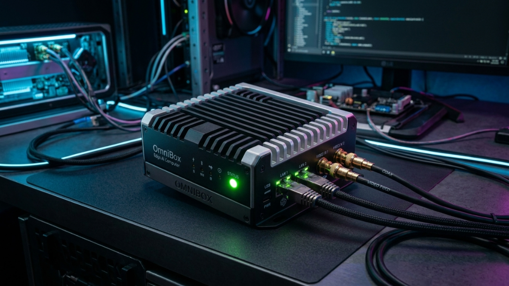

OmniVision monitorea, analiza e interpreta el
comportamiento
humano ante posibles amenazas impulsado por IA

Nuestra tecnología está diseñada para fusionar la precisión de la robótica con la adaptabilidad de la inteligencia artificial, desbloqueando posibilidades infinitas en seguridad, manufactura y la vida cotidiana.
Procesamiento en tiempo real local sin depender de la nube. Diseñado para garantizar mínima latencia y soberanía tecnológica en cada etapa.
Ingreso de la señal de vídeo en vivo (24/7) mediante protocolo RTSP.
Decodifica el video localmente con la NPU de la SBC D-Robotics RDK X5 sin enviar datos a internet.
Procesamiento paralelo con OpenCV y YOLOv8 detectando personas y objetos en tiempo real.
Un modelo de lenguaje describe y contextualiza la escena de las alertas para dar más información.
Orquestación y distribución segura de datos a través de FastAPI y NestJS.
Visualización en vivo de KPIs y clips de alertas con bounding boxes para el operador.
Latencia de alerta
Tiempo hasta el panel del operador
Precisión de detección
Clasificación de entidades en escena
Monitoreo continuo
Sin interrupciones en el sistema

BNC × 4 · GbE · USB-C · HDMI
Inferencia local · sin latencia cloud
RDK X5 · acelerador IA · fanless
Datos en sitio · sin nube externa
Todo lo que necesitas saber sobre el sistema OmniVision.
Secuencias e imágenes de las cámaras que son analizadas fotograma a fotograma localmente.
Sí, la arquitectura de IA es adaptable para integrarse con modelos especializados según el caso de uso.
El sistema muestra una vista previa neutra sin romper el layout general del panel operador.
Directamente en el tablero interactivo junto al vídeo en vivo, sin necesidad de cambiar de aplicación.
No. Todo el procesamiento ocurre localmente en la OmniBox. Internet es opcional para actualizaciones remotas.